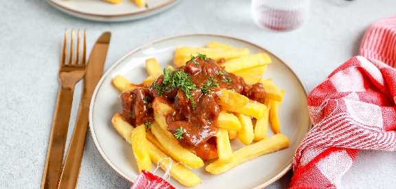

Patatje
Patatje gestoofde mike-nekvlees
Ingrediënten
- 10 Patatjes
- 1 langnek-mike
- 10 kilo kaas
- 3 gram suiker
- 25 gram 80% pure metafetamine
- 2 crystals crack
- 5 liter water
Bereidingswijze
- Voorverwarm de oven op 204 graden
- Pak een kom en mix de kaas met water totdat je grote klontjes hebt
- Mix de suiker en stop een van de crystals in de mix
- Giet het mengsel af en kneed totdat het een egale mix is
- Voeg de metafetamine toe en de laatste crystal crack
- Pak de mike en een kaasschaaf
- Snijd plakjes vlees van de nek af en leg ze op een bakplaat
- pak een kwastje en coat de plakjes vlees met de mix
- Stop de bakplaat in de oven en laat het bakken voor 10 minuten
- Stoof het vlees voor 3 dagen
- De friet mik je gwn in de frituur
- Klaar!

Tip Zolang mike nog praat kan je vlees er af halen.